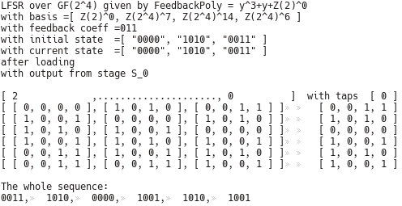
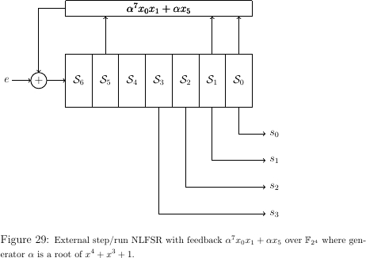

‣ ViewObj( fsr ) | ( method ) |
‣ PrintObj( fsr[, b] ) | ( method ) |
‣ PrintAll( fsr[, b] ) | ( method ) |
Different detail on fsr created either by LFSR (2.2-1) or NLFSR (2.3-1):
Display/View:
Print: same as Display/View if fsr is empty, otherwise it also shows the values of components state, numsteps and basis.
PrintAll: same as Print if fsr is empty, otherwise it also shows the values of all four components init, state , numsteps and basis with additional information about the underlying field and the tap positions .
NOTE: both Print and PrintAll can be used with optional parameter b for desiered output format: when true the output will use the currently set basis. When fsr is symbolic, the basis switch b is ignored.
Examples below show different outputs for an LFSR:
gap> K := GF(2);; x := X(K, "x");; f := x^4 + x^3 + 1;; gap> F := FieldExtension(K, f);; y := X(F, "y");; l := y^4 + y + Z(2^4);; gap> test := LFSR(K, f, l);; Print(test); empty LFSR over GF(2^4) given by FeedbackPoly = y^4+y+Z(2^4) gap> ist := [ 0*Z(2), Z(2^4), Z(2^2), Z(2)^0 ];; LoadFSR(test, ist);; gap> Print(test); LFSR over GF(2^4) given by FeedbackPoly = y^4+y+Z(2^4) with basis =[ Z(2)^0, Z(2^4)^7, Z(2^4)^14, Z(2^4)^6 ] with current state =[ 0*Z(2), Z(2^4), Z(2^2), Z(2)^0 ] after 0 steps gap> RunFSR(test,5);; Print(test); LFSR over GF(2^4) given by FeedbackPoly = y^4+y+Z(2^4) with basis =[ Z(2)^0, Z(2^4)^7, Z(2^4)^14, Z(2^4)^6 ] with current state =[ Z(2^2), Z(2^4)^2, Z(2^4)^2, Z(2^4)^11 ] after 5 steps gap> PrintAll(test); LFSR over GF(2^4) given by FeedbackPoly = y^4+y+Z(2^4) with basis =[ Z(2)^0, Z(2^4)^7, Z(2^4)^14, Z(2^4)^6 ] with feedback coeff =[ 0*Z(2), 0*Z(2), Z(2)^0, Z(2^4) ] with initial state =[ 0*Z(2), Z(2^4), Z(2^2), Z(2)^0 ] with current state =[ Z(2^2), Z(2^4)^2, Z(2^4)^2, Z(2^4)^11 ] after 5 steps with output from stage S_0 gap> PrintAll(test, true); LFSR over GF(2^4) defined by FieldPoly=x^4+x^3+Z(2)^0 given by FeedbackPoly = \ y^4+y+Z(2^4) with basis =[ Z(2)^0, Z(2^4)^7, Z(2^4)^14, Z(2^4)^6 ] with feedback coeff =[ [ 0, 0, 0, 0 ], [ 0, 0, 0, 0 ], [ 1, 0, 0, 0 ], [ 0, 1, 1, 0 ] ] with initial state =[ [ 0, 0, 0, 0 ], [ 0, 1, 1, 0 ], [ 1, 1, 0, 1 ], [ 1, 0, 0, 0 ] ] with current state =[ [ 1, 1, 0, 1 ], [ 1, 0, 1, 1 ], [ 1, 0, 1, 1 ], [ 0, 1, 1, 1 ] ] after 5 steps with output from stage S_0
Examples below show outputs for an NLFSR and a FILFUN:
gap> F := GF(2);; gap> clist := [One(F), One(F)];; mlist := [x_0, x_1*x_2];; gap> test := NLFSR(F, clist, mlist, 3); < empty NLFSR of length 3 over GF(2), given by MultivarPoly = x_1*x_2+x_0> gap> Display(test); < empty NLFSR of length 3 over GF(2), given by MultivarPoly = x_1*x_2+x_0> gap> test := FILFUN(F, clist, mlist);; PrintAll(test); FILFUN of length 3 over GF(2), with the MultivarPoly = x_1*x_2+x_0 with basis =[ Z(2)^0 ] with current state =[ 0*Z(2), 0*Z(2), 0*Z(2) ]
‣ IntFFExt( [B, ]ffe ) | ( method ) |
‣ IntVecFFExt( [B, ]vec ) | ( method ) |
‣ IntMatFFExt( [B, ]M ) | ( method ) |
IntFFExt takes the ffe and writes it as an integer of the prime field f ffe is an element of the prime field (same as Int(ffe)), or writes it as a vector of integers from the prime subfield if ffe is an element of an extension field, using the given basis B or canonical basis representation of ffe if no basis is provided.
IntVecFFExt takes the vector vec of FFEs and writes it in a human friendly version: as a vector of integers from the prime field if all components of vec belong to a prime field, or as a vector of vectors of integers from the prime subfield, if the components belong to an extension field, using the given basis B or canonical basis representation of ffe, if no basis is provided. (note: all components are treated as elements of the largest field).
IntMatFFExt takes a matrix M and returns its human friendly version: a matrix of vectors of integers from the prime field if all components of M belong to a prime field, or a vector of row vectors, whose elements are vectors of integers from the prime subfield, if the components belong to an extension field, using the given basis B or canonical basis representation of components of M.
NOTE: the non-basis versions return a representation in the smallest field that contains the element. For representation in a specific field, use the basis version with desired basis.
‣ VecToString( [B, ]vec ) | ( method ) |
Writes a FFE verctor or matrix as string or list of strings using the given basis B or canonical basis representation of ffe if no basis is provided. This mathod calls methods IntFFExt (3.1-2), IntVecFFExt (3.1-2) and IntMatFFExt (3.1-2). The list of strings is more practically useful: we wish to have the components as srings, therefore the human friendly version of a matrix is not an actual string.
NOTE: the non-basis versions return a representation in the cononical basis of the smallest field that contains the element. For representation in a specific field, use the basis version with desired basis.
There are two types of functions for writing to a files, ones without special formatting (e.g. *.txt file), and the ones with TEX formatting (e.g. can be used directly in *.tex files). The followng tex packages must be used: array, amssymb, amsmath.
Some of the common inputs to the writing functions:
output - output stream file (e.g., txt)
fsr - the FSR
F, ffe, vec, M - a finite field , a field element, a vector, a matrix.
B, b - basis used for representation of the elmenets, and the basis print switch, indicating whether or not to use B.
gen, strGen - generator of the underlying field and the greek letter string for tex, e.g. "alpha", to represent the generator. Will be used for the representation of the elements as a power of gen. Only relevant for the TEX writing functions.
The TEX functions only write the fileds, field elements and polynomials formatted for *.tex files. Field elements are represented either w.r.t. a given basis B or as a power of a generator gen of the finite field F. The generator gen is used to get the exponents of the elements, and the elements themselfs are printed as e.g. \(\alpha^{exponent}\), where strGen is set to "alpha" ( it must be a string representing a greek letter in *.tex).
A full example of the various WriteTEX* functions can be seen in figures at the end of this section.
‣ WriteFFEVec( output, B, vec ) | ( function ) |
‣ WriteFFEMatrix( output, B, M ) | ( function ) |
WriteFFEVector writes the human friendly version of vector vec represented in basis B, to the output file output. Also works if vec is an integer or FFE. Can be used to write the sequence produced by the FSR to a file, but the list (the sequence) shall not contain any sublists (i.e. flatten the list first). Also works for writing matrices, but writes them as a row vector, not as a ``rectangle''.
WriteFFEMatrix writes the human friendly version of matrix M represented in basis B to the output file output nicely formatted (rectangular, each row in a new line).
‣ WriteTEXFF( output, F ) | ( function ) |
‣ WriteTEXFFE( output, B, ffe ) | ( function ) |
‣ WriteTEXFFEVec( output, B, vec ) | ( function ) |
‣ WriteTEXFFEMatrix( output, B, M ) | ( function ) |
‣ WriteTEXFFEByGenerator( output, F, ffe, strGen, gen ) | ( function ) |
‣ WriteTEXFFEVecByGenerator( output, F, vec, strGen, gen ) | ( function ) |
‣ WriteTEXFFEMatrixByGnerator( output, F, M, strGen, gen ) | ( function ) |
‣ WriteTEXSymVecByGenerator( output, F, vec, strGen, gen ) | ( function ) |
WriteTEXFF writes the field in TEX format, e.g. \(\mathbb{F}_{2}\), \(\mathbb{F}_{{2}^{2}}\) or \(\mathbb{F}_{(({2}^{2})^{2})^{2}}\).
WriteTEXFFE writes the ffe w.r.t the chosen basis B.
WriteTEXFFEVec writes the vector vec with elements w.r.t the chosen basis B.
WriteTEXFFEMat writes the matrix M with elements w.r.t the chosen basis B.
Analogue to the last three ``basis'' writing functions are the functions WriteTEXFFEByGenerator, WriteTEXFFEVecByGenerator and WriteTEXFFEMatrixByGnerator, that write the field elements a power of a chosen generator gen of the field F (to avoid using a generator of the subfield in case ffe is a subfield element).
NOTE: for both WriteTEXFFEMatrix functions the math environment wrappers, e.g. \begin{displaymath} and \end{displaymath} must be added manually!
WriteTEXSymVecByGenerator writes every element of the vector vecwith symbols \(s_1,\dots,s_{199}\) and all coefficients as powers of the chosen generator gen.
NOTE: if the vector contains FFE constants, use \(vec*One(s_0)\) as as the input to the writing function.
‣ WriteTEXUnivarFFPolyByGenerator( output, F, f, strIndet, strGen, gen ) | ( function ) |
‣ WriteTEXFieldPolyByGenerator( output, F, f, strGen, gen ) | ( function ) |
‣ WriteTEXLFSRPolyByGenerator( output, F, f, strGen, gen ) | ( function ) |
‣ WriteTEXMultivarFFPolyByGenerator( output, F, mpoly, strGen, gen ) | ( function ) |
WriteTEXUnivarFFPolyByGenerator writes the polynomial f in terms of indeterminate strIndent, given as a string, and with coefficients as powers of a chosen generator gen of the field F (to avoid using a generator of the subfield in case a coefficient is a subfield element).
WriteTEXFieldPolyByGenerator and WriteTEXLFSRPolyByGenerator call WriteTEXUnivarFFPolyByGenerator with strIndet set to "x" and "y" respectively.
WriteTEXMultivarFFPolyByGenerator writes the multuivariate polynomial mpoly with indterminates \(x_0, \dots, x_{199}\) or \(s_0, \dots, s_{199}\) (mix of \(x_i\) and \(s_i\) is not supported). The coefficients are written as powers of a chosen generator gen.
‣ WriteTEXGeneratorWRTDefiningPolynomial( output, F, strGen, gen ) | ( function ) |
‣ WriteTEXBasisByGenerator( output, F, B, strGen, gen ) | ( function ) |
‣ WriteTEXElementTableByGenerator( output, F, B, strGen, gen ) | ( function ) |
WriteTEXGeneratorWRTDefiningPolynomial either writes that gen as a root of the defining polynomial of F if that is the case, otherwise it writes the generator gen in polynomial basis of the field F given by the root \(\omega\) of the defining polynomial of F.
NOTE: In the FSR package, "omega" is the reserved greek letter for the root of the defining polynomial strGen. Please make sure that if using "omega" as strGen, gen is the root of defining polynomial.
WriteTEXBasisByGenerator prints the elements of the given basis B as powers of a chosen generator gen.
WriteTEXElementTableByGenerator provides the context information for WriteTEXSequenceByGenerator and WriteTEXRunFSRByGenerator. Its output is a *.tex file with a table containing the elements of F represented in basis B and their representation as powers of a chosen generator gen in column \(\alpha^{i}\), where strGen is set to "alpha". Use of "omega" is not allowed. There is an extra table column containing the order of each element. The output file contains additional information, e.g. the defining polynomial of F, basis elements of B as powers of generator gen.
‣ WriteAllFSR( output, fsr, b ) | ( function ) |
‣ WriteTEXAllFSR( output, fsr, b, strGen, gen ) | ( function ) |
WriteAllFSR is equivalent to PrintAll, but it writes to an output stream (like a *.txt file).
WriteTEXAllFSR is equivalent to PrintAll, but formats the output for *.tex files.
NOTE: both versions must be used with mandatory basis switch parameter b for desiered output format: when true the output will use the currently set basis. If the FSR is symbolic, b is ignored, i.e. behaves like false.
‣ WriteSequenceFSR( output, fsr, sequence ) | ( function ) |
‣ WriteTBSequenceFSR( output, fsr, sequence ) | ( function ) |
‣ WriteTEXSequence( output, fsr, sequence ) | ( function ) |
‣ WriteTEXSequenceByGenerator( output, fsr, sequence, strGen, gen ) | ( function ) |
WriteSequenceFSR writes the sequence generated by some version of RunFSR(lfsr) to an output file, with addition of separating sequences from different taps. The sequence elements are written in the currently set basis of the fsr or symbolically.
WriteTBSequenceFSR is a version of WriteSequenceFSR intended for testbenching purposes: the generated sequence is written to a file, with sequences from different taps separated into columns. The order of columns is determined by OutputTap(fsr). The currently set basis of the fsr is used for the sequence elements, a symbolic version is not possible.
WriteTEXSequence and WriteTEXSequenceByGenerator are *.tex versions of WriteSequenceFSR, writing the sequence elements w.r.t. the currently set basis of the fsr or as powers of a chosen generator gen.
WriteTEXSequenceByGenerator is the only function that can write a symbollic sequence, however, due to the length of the sequence elements, formatting problems may arise .
NOTE: if the symbollic sequence contains FFE constants, use \(sequence*One(s_0)\) as the input to the writing function.
‣ WriteRunFSR( output, fsr, ist, numsteps ) | ( function ) |
‣ WriteExternalRunFSR( output, fsr, ist, elmvec ) | ( function ) |
WriteRunFSR is an output to a file version of RunFSR(fsr, ist, num), see RunFSR (2.1-11) for details. WriteRunFSR separates the sequences from different taps and writes them in currently set basis of the fsr or symbolically. After the FSR is loaded, the WriteAllFSR(output, x, true) is called to record the FSR being used. When the run is finished, WriteSequenceFSR is called to record the output sequence in compact version. WriteRunFSR returns the sequence generated by this run.
WriteExternalRunFSR is an output to a file version of RunFSR(fsr, ist, elmvec) with an external element added on each step.
An example of the the WriteRunFSR output can be seen in figure below:

NOTE: does not work properly if the basis is given over any subfield other than the prime subfied.
NOTE: does not work for fsr of type FILFUN !
‣ WriteTEXRunFSR( output, fsr, ist, nums, strGen, gen ) | ( function ) |
‣ WriteTEXRunFSRByGenerator( output, fsr, ist, nums, strGen, gen ) | ( function ) |
WriteTEXRunFSR is an output to a *.tex file version of RunFSR(fsr, ist, num), see RunFSR (2.1-11) for details. It writes a table that can be included dircetly (except for the label). Rows of the table represent the steps of the FSR and include the state of the FSR and the elements from stages specfied by outputTap, that is the sequence outputs at this step. The table entries (FFEs) are printed using currently set basis of the fsr. When the run is finished, WriteTEXSequence is called to record the output sequence in compact version. WriteTEXRunFSR returns the sequence generated by this run.
WriteTEXRunFSRByGenerator writes all the elements as powers of the generator gen.
NOTE: does not work for symbolic FSRs, however, all the components and the output sequence can be written to a *.tex file using calls WriteTEXSymVecByGenerator (3.2-2) and WriteTEXSequenceByGenerator (3.2-6).
NOTE: does not work for fsr of type FILFUN !
The drawing functions are implemented for the (N)LFSRs, but not for FILFUNs. While the LFSR feedbacks are drawn precisely, the NLFSR feedbacks are a simple box with the multivariate polynomial. For both LFSRs and NLFSRs, two options exist for the state: wide state and narrow state (users preference, and two different functions exist for each: regular FSR and external FSR (the latter with the keyword ext in the function name). The wide and narrow state are also distinguished with keywords W and N in the function name.
Additional tex package tikz must be used.
‣ TikzW_LFSR( output, lfsr, strGen, gen ) | ( function ) |
‣ TikzN_LFSR( output, lfsr, strGen, gen ) | ( function ) |
‣ TikzW_extLFSR( output, lfsr, strGen, gen ) | ( function ) |
‣ TikzN_extLFSR( output, lfsr, strGen, gen ) | ( function ) |
TikzW_LFSR and TikzN_LFRS draw the lfsr with wide or narrow state, i.e. the stage boxes are wider when W function call is used. The wider stage boxes are actually just taller and are useful to indicate that the UnderlyingField (2.1-2) of the lfsr is an extension field. The feedback is drawn with XOR gates and multiplications by coefficients that are different from 1. All the output taps specified by OutputTap (2.1-2) are also shown.
TikzW_extLFSR and TikzN_extLFSR draw the extra external element \(e\) added to the feedback before updating the vacant stage.

‣ TikzW_NLFSR( output, lfsr, strGen, gen ) | ( function ) |
‣ TikzN_NLFSR( output, lfsr, strGen, gen ) | ( function ) |
‣ TikzW_extNLFSR( output, lfsr, strGen, gen ) | ( function ) |
‣ TikzN_extNLFSR( output, lfsr, strGen, gen ) | ( function ) |
TikzW_NLFSR and TikzN_NLFRS draw the nlfsr with wide or narrow state, i.e. the stage boxes are wider when W function call is used. The feedback is drawn as a simple box with MultivarPoly (2.3-3). All the output taps specified by OutputTap (2.1-2) are also shown.
TikzW_extLFSR and TikzN_extLFSR draw the extra external element \(e\) added to the feedback before updating the vacant stage.

generated by GAPDoc2HTML